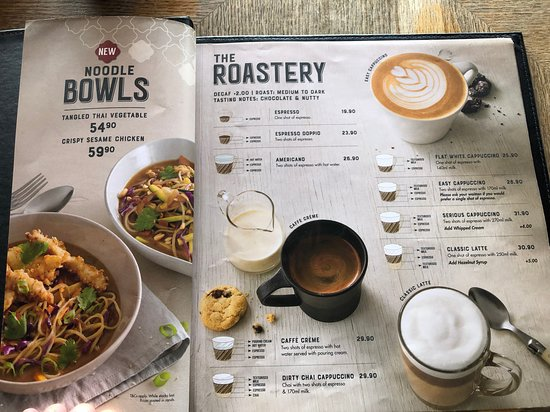
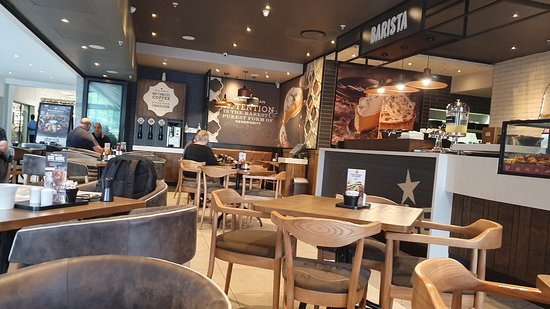
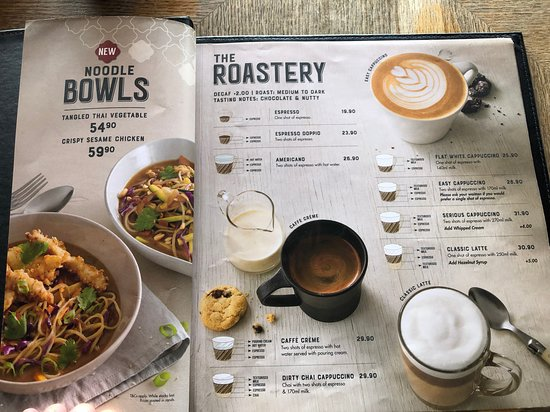
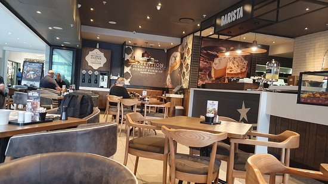

Mugg and Bean is a full-service, On-The-Move restaurant, coffee-themed franchise restaurant chain originating from South Africa. The restaurant chain was founded in 1996 by Ben Filmalter after a visit to a Chicago coffee shop in the early 1990s inspired him to open a similar restaurant in South Africa. The first restaurant was opened at the Waterfront in Cape Town in 1996. The franchise was bought by Famous Brands in 2009. As of 2015 they had 184 outlets throughout South Africa and the rest of Africa, as well as a number of overseas operations, including the United Arab Emirates and Kuwait.[